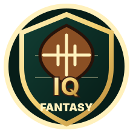

Live Draft Room
Syncs public ESPN draft picks, draft order, team names, and drafted players.

Fantasy IQESPN fantasy football dashboard
A custom command center for your ESPN fantasy football league with live public-league draft sync, ranked boards, mock draft practice, and trade checks.
Concierge setup
Each subscription covers one manually configured dashboard for one public ESPN fantasy football league.
What is included
Syncs public ESPN draft picks, draft order, team names, and drafted players.
PPR player boards with tiers, risk flags, trends, and quick player analysis.
Practice draft slots, review roster shape, and test pick decisions before draft night.
Compare trade pieces and slow down impulsive offers after the draft.
Requirement
Private ESPN league authentication is not included in this v1 concierge setup. If your league is private, the dashboard can still be configured, but live draft sync will not work until the league is public.